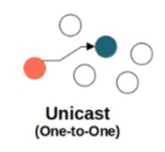
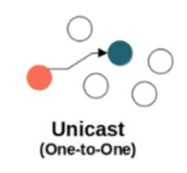
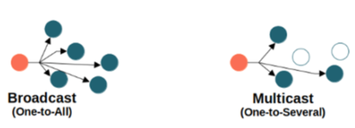
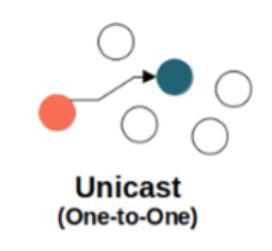
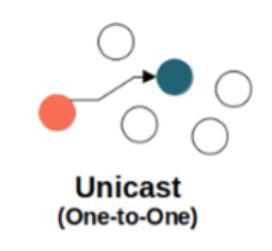
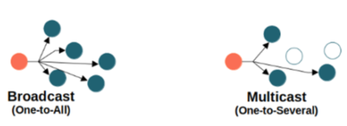

——SYN—>
<——SYN-ACK——
——ACK—>
 





| TCP | UDP | |
|---|---|---|
| 连接类型 | 面向连接——设备必须在传输数据（包括握手）之前建立连接，并在传输后关闭连接。 | 无连接——发送数据不需要连接和握手。 |
| 可靠性 | 可靠——保证数据包的传送。 | 不可靠——无法保证数据报的传送。 |
| 通讯信息类型 | 有状态——客户端和服务器保存有关会话的信息。 | 无状态——服务器不保留有关会话的任何信息。 |
| 标头尺寸 | 变量 — 20-60 字节标头长度。 | 固定 — 8 字节。 |
| 速度 | 比 UDP 慢，因为它遵循许多步骤来确保准确性。 | 比 TCP 更快，因为它是一个更简单的协议。 |
| 顺序 | 所有数据包均按特定顺序传送给接收者。 | 数据报的传送没有特定的顺序。 |
| 错误检测机制 | 提供广泛的错误检测：流量控制;拥塞控制;数据确认。 | 提供基本错误检测：校验 |
| 协议 | HTTP、HTTPs、FTP、SMTP 和 Telnet。 | DNS、DHCP、TFTP、SNMP、RIP 和 VoIP。 |
| 协议 | 网页浏览。文件传输。电子邮件（SMTP、IMAP/POP） | VPN。视频和音乐流。在线游戏、多人游戏。现场直播和视频会议。域名系统 (DNS) 查询。IP 语音 (VoIP)。 |
| 协议 | 名称 | 端口号 | 传输协议 |
|---|---|---|---|
| FTP | 文件传输协议 | 21 | TCP |
| SFTP | 安全文件传输协议 | 22 | SCTP, TCP |
| FTPS | FTP安全传输协议 | 443 | FTP |
| TFTP | 简单文件传输协议 | 69 | UDP |
| Telnet | - | 23 | TCP |
| HTTP | 超文本传输协议 | 80 | TCP |
| HTTPS | HTTP安全传输协议 | 443 | TCP |
| SCP | 安全拷贝协议 | 22 | SCTP, TCP |
| SSH | 安全外壳协议 | 22 | SCTP, TCP |
| SMTP | 简单邮件传输协议 | 25 | TCP |
| DNS | 域名系统 | 53 | UDP |
| SNMP | 简单网络管理协议 | 161 | TCP, UDP |
| SNMP Trap | 简单网络管理协议陷阱 | 162 | TCP, UDP |
| ISAKMP | VPN - 互联网安全关联和密钥管理协议 | 500 | UDP |
| TACACS | 终端访问控制器访问控制系统 | 49 | TCP, UDP |
| POP3 | 邮局协议版本3 | 110 | TCP |
| NNTP | 网络新闻传输协议 | 119 | TCP |
| IMAP4 | Internet邮件访问协议版本4 | 143 | TCP |
| Kerberos | - | 88 | UDP |
| Syslog | - | 514 | TCP, UDP |
| L2TP | 第二层隧道协议 | 1701 | UDP |
| PPTP | 点对点隧道协议 | 1723 | TCP |
| RDP | 远程桌面协议 | 3389 | TCP, UDP |